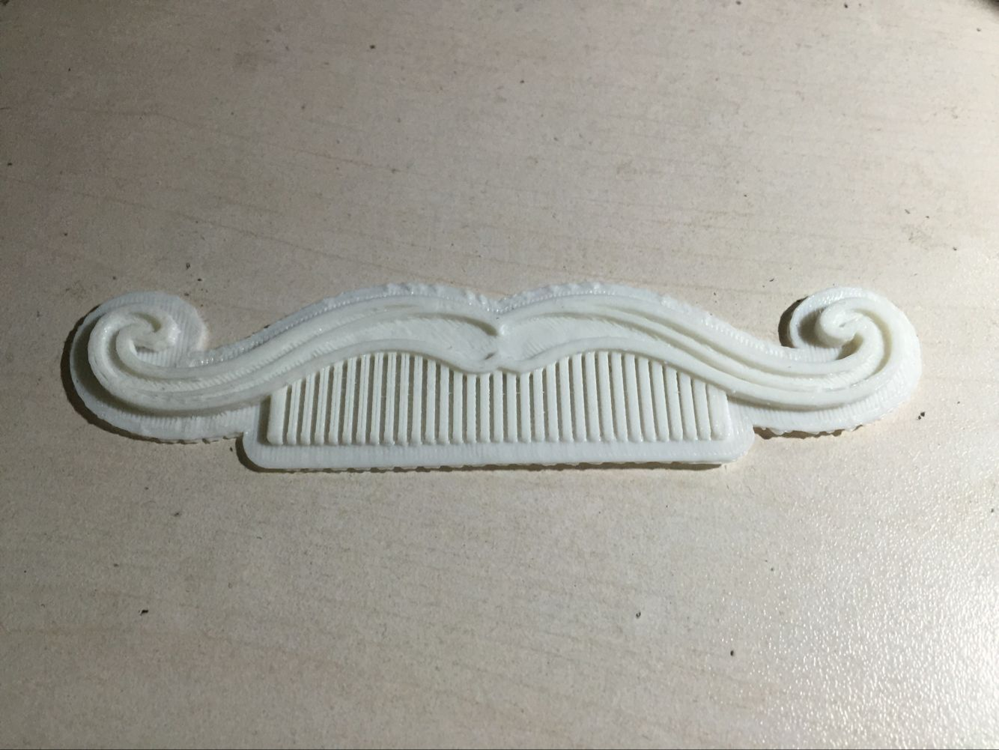

Welcome to My Makerspace.
There's so Fun to be a maker!!!!
It's the first time i come to know about maker movement and makerfaire, they are so amazing! i felt lost in making things and learning about new things. It's a precious opportunity. In this page I will make records of my experience and progress. I will also share my masterpieces with you.
Learn about makers
The first lesson is an introduction of makers, we talked about the history, the show, and the fantastic works that really caught my eyes. Curious, enthusiastic amateur inventors, that's makers. In the lab room, i met some guys who were creating a electric piano, which was a reutilization of an broken 3D printer. One day i would make something like that, i thought to myself.
Use 3D printer
SIMPLE! i downloaded a model from the internet then sliced it with the software Makerbot, transfered the data to the printer and waited. However, i failed the first time, because i chose the setting to print redundent support materials. Anyway, it didn't lok so bad.

Use the laser machine
The laser machine has three basic models: carving, cutting and marking. After several failures, I made this picture.